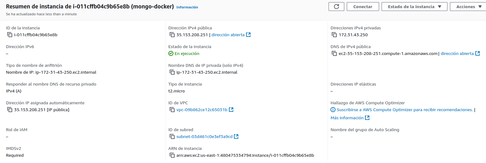
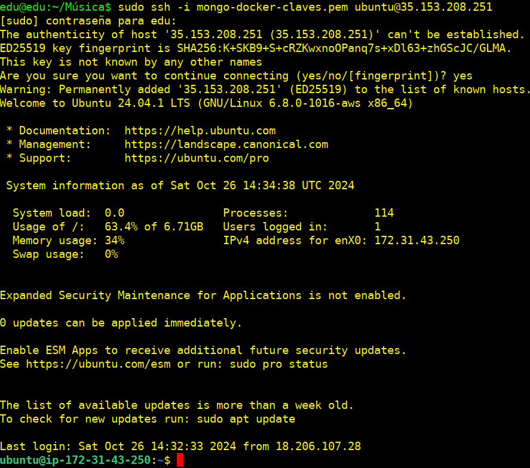
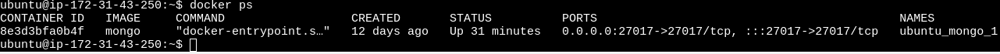
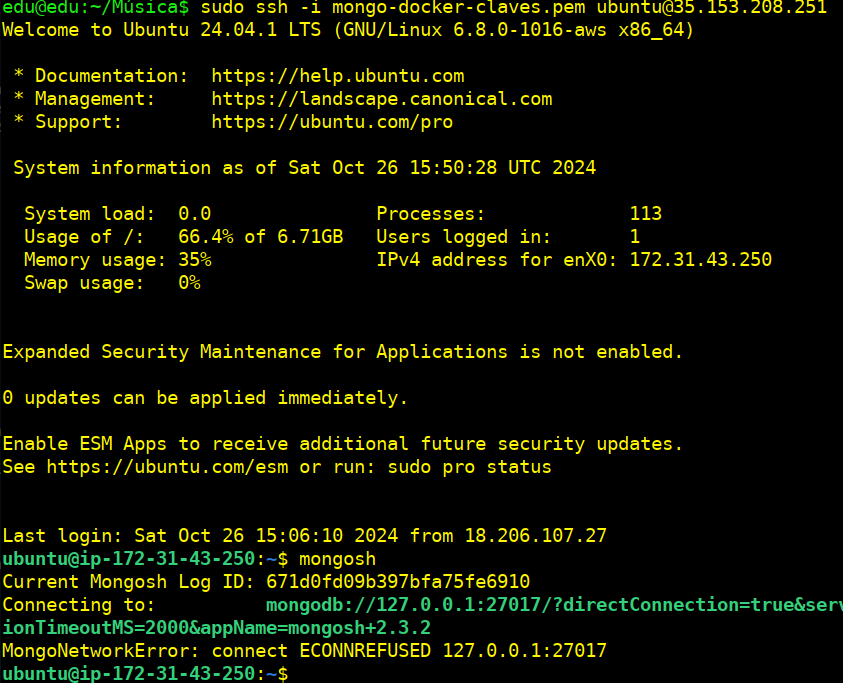
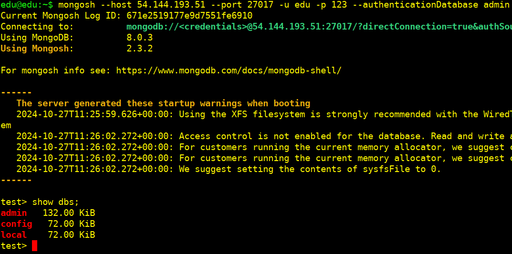

Práctica 2.2: MongoDB (docker)
Instalación y Configuración Avanzada de MongoDB
Configuramos la primera instancia con ubuntu donde lo instalaremos usando Docker

Verificamos la conectividad entre nuestro host y la MV (mongo-docker):
ssh -i /ruta/a/clave .pem (ejem:ubuntu)@ip-pública

Instalación de MongoDB usando Docker
Paso 1: Actualizar los paquetes
sudo apt update
Paso 2: Instalamos Docker
sudo apt install docker.io
Paso 3: Descargamos la imagen de MongoDB desde Docker Hub
sudo docker pull mongo
Paso 4: Creamos y ejecutamos un contenedor con MongoDB
sudo docker run --name nombre-contenedor -d -p 27017:27017 mongo
Este comando nos creará un contenedor en segundo plano con el nombre nombre-contenedor, asignado el puerto 27017 del host al contenedor
Paso 5: Verificamos que el contenedor está en ejecución
docker ps

Paso 6: Acceder al cliente de MongoDB dentro del contenedor
Podemos abrir una terminal dentro del contenedor y veriricar que MongoDB funciona:
docker exec -it 'nombre-contenedor' mongosh
Si el cliente de MongoDB se abre y muestra la conexión correcta, significa que MongoDB se nos está ejecutando correctamente en el contenedor.
Cambio del puerto de MongoDB
Paso 1: Detener y eliminar el contenedor de MongoDB actual que ya está ejecutándose
docker stop 'nombre-contenedor'
docker rm 'nombre-contenedor'

Paso 2: Crear un Nuevo Contenedor con el Puerto Cambiado
Vamos a crear un nuevo contenedor y especificar un puerto diferente al predeterminado (por ejemplo, usaremos el puerto 28000).
docker run -d --name 'nombre-contenedor' -p 28000:27017 mongo
Aquí hemos indicado que el puerto 28000 de la máquina anfitriona esté asociado al puerto interno 27017 del contenedor, el cual es el puerto que MongoDB usa por defecto dentro del contenedor. MongoDB seguirá escuchando en 27017 dentro del contenedor, pero externamente accederemos mediante 28000.

Paso 3: Verificamos la conexión con el nuevo puerto
mongosh --port 28000

Configuración de la conectividad de red en MongoDB (docker) para NO permitir conexiones remotas
Paso 1: Iniciamos el contenedor MongoDB sin exponer el puerto en el host
Ejecuta MongoDB en Docker sin especificar el mapeo del puerto (evitando -p 27017:27017):
docker run -d --name 'nombre-contenedor' mongo
Esto hará que MongoDB esté disponible solo dentro del contenedor y no sea accesible desde otras máquinas
Verificamos el estado del contenedor para confirmar que está en ejeución, pero sin puertos espuestos

En la columna PORTS, deberemos ver que no se muestra ningún puerto para otro-contenedor, indicando que no hay acceso al puerto 27017 desde el exterior del contenedor
Para configurar MongoDB en Docker y no permitir conexiones remotas, debemos ajustar la configuración de MongoDB para que escuche solo en la interfaz localhost (127.0.0.1). Esto garantiza que MongoDB acepte conexiones únicamente desde la misma máquina anfitriona o desde el propio contenedor.
Ejecutaremos MongoDB en Docker con la configuración de localhost
Con la imagen que tenemos de MongoDB de Docker, crearemos un contenedor que use el archivo de configuración mongod.conf o directamente especificar la IP de 127.0.0.1.
Especificaremos bindIp directamente en el comando de inicio
docker run -d --name <nombre-contenedor> -p 127.0.0.1:27017 mongo --bind_ip 127.0.0.1
Usaremos un firewall (ufW) para bloquear el acceso externo
-
Habilitamos el firewall
sudo ufw enable -
Bloqueamos cualquier acceso externo al puerto 27017
sudo ufw deny 27017 -
Confirmamos que las reglas se han aplicado correctamente
sudo ufw status

Verificamos que MongoDB no sea accesible externamente

NO PODEMOS ACCEDER
Gestión de cuentas de usuario y permisos
Creamos un usuario en MongoDB (docker) que tenga permiso para conectarse desde la otra máquina
docker exec -it <nombre-contenedor mongosh
test> use admin
db.createUser({user: "admin_user", pwd: "securePassword", roles: [ { role: "root", db: "admin" } ]});

Verificación de la conectividad entre máquinas
- Nos conectamos desde la MV-AWS (docker) a la MV-AWS (apt)
- Desde el HOST a la MV-AWS (apt)
